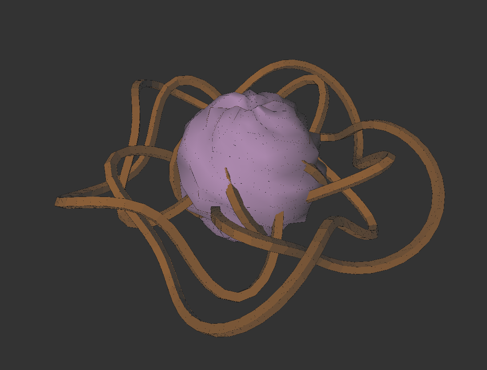
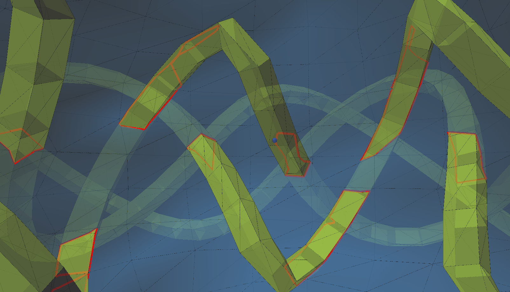
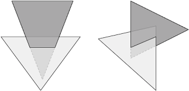
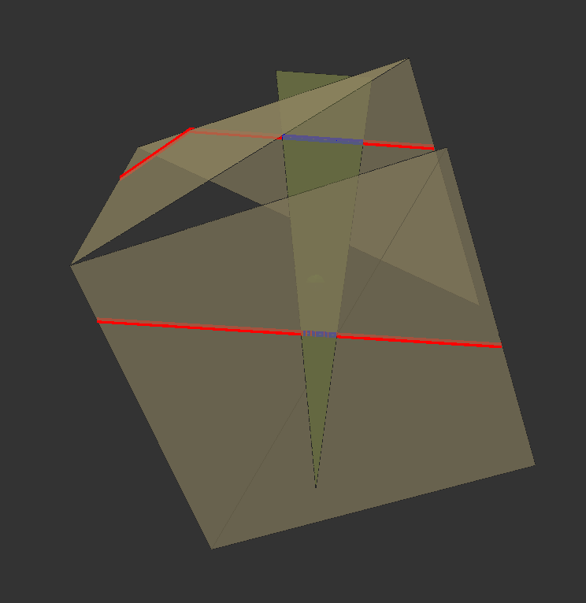
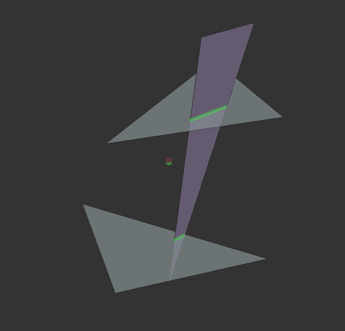
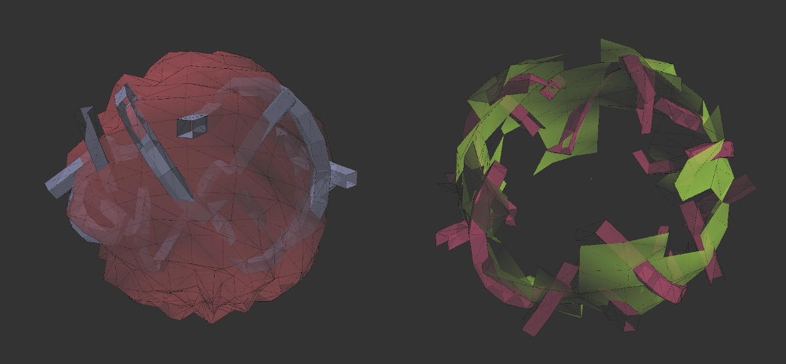
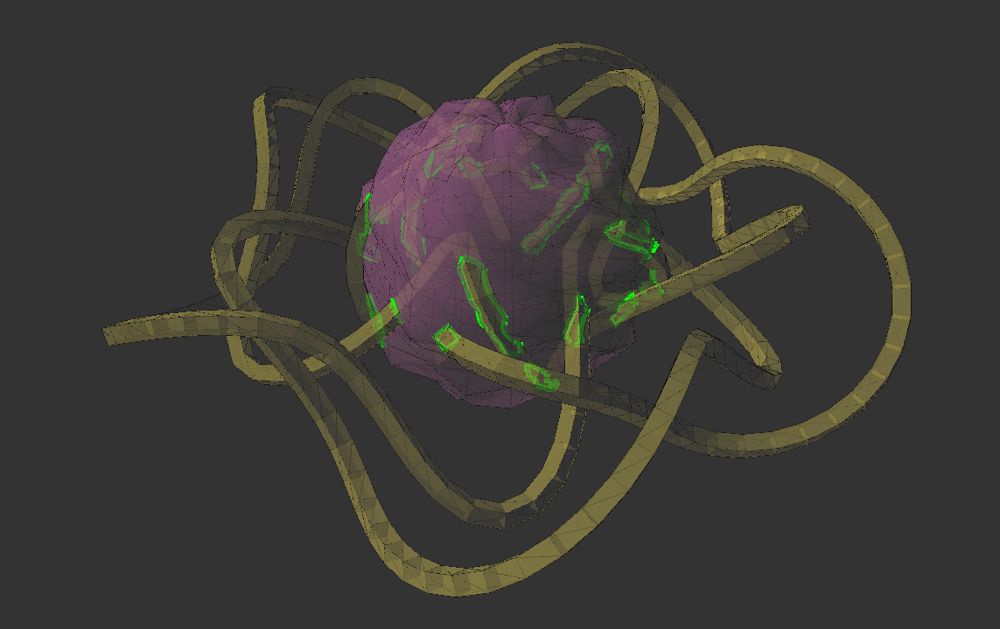

Triangle Intersection in 3D Space
Idea
I was working on a game with a friend of mine when I came across this problem. The game is browser based, using webgl and three.js, and I wanted to create a complex, bee-hive sort of structure which looked like this.

The idea is that the spheroid would be a central room and the tube would be pathways leading off of it. The only problem was, that the two meshes intersected. The sphere could be seen inside the tube as it passed from the outside to the inside. To fix this I needed alter the sphere geometry to remove the parts which were inside the tube. I looked at some libraries people had already made (including this) however they were all either out of date, or simply took too much time to merge the geometries (crashing my browser). I decided just to figure it out myself. This post will explain the first step, finding all the intersections between the geometries. Here is a rendering where my code has taken the geometries and found all the intersections (colored red).

Algorithm Structure
The initial function of our algorithm will be called “intersect()”;
Intersect will take two parameters. A “gN” geometry and a “gM” geometry. It will cycle through each face of gM, and for each one of those faces it will cycle through each face of gN. For each pair of faces it will first check if an intersection is possible or likely, and if so it will find the line of intersection between each triangle. For testing it will also put this face onto a list, and then remove all faces of gN which have no intersections (this is just so we can see it working.) It is important to remember that in THREE.js, geometry faces contain three numbers: a,b and c, which correspond to indices in the list of vertices.1
2
3
4
5
6
7
8
9
10
11
12
13
14
15
16
17
18
19
20//takes two geometries and finds intersections
function intersect(gM,gN){
var faces = [];
for(var iM = 0 ; iM < gM.faces.length ; iM++){
for(var iN = 0 ; iN < gN.faces.length ; iN++){
if(canIntersect(gM,iM,gN,iN) && doesIntersect(gM, iM, gN, iN) && faces.indexOf(iN) == -1){
faces.push(iN);
}
}
}
for(var i = 0 ; i<faces.length ; i++){
faces[i] = gN.faces[faces[i]];
}
console.log(faces.length + "/" + gN.faces.length);
//comment the next line to prevent removing faces
gN.faces = faces;
}
In some places in the code I have used a “equals()” function, which simply checks if two values are within an epsilon, to prevent mistakes when dealing with numbers which are essentially 0, but not quite.
1 | function equals(a,b,e){ |
Finding Intersections
1 | function doesIntersect(g1, i1, g2, i2){ |
“doesIntersect” will do most of the work in the algorithm. The function will take four parameters, two geometries (gM, gN) and the corresponding indices for the faces of those geometries (iM, iN). Since we are going to be doing a lot of work on these coordinates, it is helpful to put them into an easy to use object, like so.
1 | function doesIntersect(g1, i1, g2, i2){ |
The rest of the function requires a lot of math, which I will do my best to explain. The most common method for finding the intersection of two triangles in 3D space is too:
1 - Find the equation for the planes on which the the triangles reside.
2 - Find the intersections of each line segment in triangle 1 with the plane of triangle two, and vice versa.
3 - If both triangles make exactly two intersections with the other’s plane, then we know the line of intersection for each triangle is the line between it’s points of intersection.
4 - If these lines of intersection overlap. Then then the intersection of the two triangles is the intersection of the two lines.
This concept is partially illustrated by the fallowing pictures.

This means we will need a function for getting a plane equation given three points, and a function for finding the intercept of a line segment and a plane.
Getting Plane Equation
Planes are represented by the equation Ax + By + Cz = D.
A, B, and C are coefficients which determine the direction of the plane, and D is a constant which has to do with how far the plane is from the origin.
It also just so happens that the components of a vector
So how do we get the normal vector? Well, the cross product of two vectors must be orthogonal (perpendicular in 3D) to both vectors. (Vectors can be multiplied in two ways. In simple terms, dot product represents similarities between vectors, cross product represents differences)
The algebraic cross product (there is also the Geometric Cross product, which is a different version of the formula) is defined by:
A X B = < (Ay * Bz − Az * By) , (Az * Bx − Ax * Bz) , (Ax * By − Ay * Bx) >
If we find the cross product of two vectors which run along the plane, the product vector must be perpendicular to both vectors, and therefor the plane as well. We can find two vectors which lie on this plane by taking the difference of the triangles vertices.
1 | function getPlane(a,b,c){ |
Now that we know the normal, we can use it’s components as the coefficients of our plane equation and solve for d, plugging in point a (or b, or c) as x,y and z since we know the point is on the plane. Then we return all the constants as a map.
1 | //normal vector components are proportional to plane coefficients |
Getting Intercept of Line and Plane.
Since triangles are made up of line segments, the “intercept()” function will find the intersection of a line segment and a plane. First we turn the line segment into a parametric equation (assume m and n are the endpoints of the line segment).
x = (m.x-n.x)*t + n.xy = (m.y-n.y)*t + n.yz = (m.z-n.z)*t + n.z
Now we sub this into the plane equation: Ax + By + Cz = D, and we get.
A((m.x-n.x)*t + n.x) + B((m.y-n.y)*t + n.y) + C((m.z-n.z)*t + n.z) = D
With some algebraic manipulation we can solve for t, which we can plug back into our parametric equation to get the intercept point.
t = (d - A*n.x - B*n.y - C*n.z) / (A*(m.x-n.x) + B*(m.y-n.y) + C*(m.z-n.z))
x = (m.x-n.x)*t + n.xy = (m.y-n.y)*t + n.yz = (m.z-n.z)*t + n.z
Because of the nature of the parametric equation, “t” will be between 0 and 1 if the intercept lies on the line segment. Our function will set a value “in” which is true only if the intercept is on the line segment. Finally, we have to consider the case where there is no intersection because the line and plane are parallel, in this case the denominator of t, (A(m.x-n.x) + B(m.y-n.y) + C*(m.z-n.z)), will be zero. Our code must handle this case and return no intersection. We will signify this by setting “ex” to false.
Now that we understand the math, writing the function is trivial.
1 | function intercept (a,b,c,d,p1,p2){ |
Finding the Line of Intersection
With these two functions written, the rest is mostly a matter of handling all the different possible cases, and getting the intersection of the intersections. First lets get our planes and intercepts (remember that t1 and t2 are our triangles);
1 | //first planes from triangles ([a,b,c,d] for ax+by+cz=d) |
Next we check to make sure there are some intersections. If there were not, then the triangles are parallel, and we return no intersection.
1 | //detect if parallel + system check |
Triangles can only intersect a plane on two edges, or none (if there is no intersection). The next part of the code will check if there are no intersections on the line segment, and return false if so.
If there are two intersections, it sets those as m and n in the variable i1 (for triangle 1) or i2 (for triangle two). i1 and i2 represent the lines of intersection of each triangle with the others plane.
1 | //process intersections 1 |
As you can see in this image (for which I altered the code to display i1 and i2), the place where the two lines intersect is the true intersection.

To find the intersection we first need to determine which axis to measure the lines by. If they are not vertical we will use the x axis, otherwise we must use y or z.
Once we have our value to test we will determine the max and min for each line segment.
1 | //get intersection of intersections |
If the max(end) of one line segment comes before the min(start) of the other, then there is no intersection, and we return false.
1 | //no intersection if lines are disconnected |
Then all that is left to do is handle the four different configurations the lines could be in. We have to make sure we return the segment that is contained by both of the others. This line segment is the intersection of the two triangles.
1 | var inner; |
To display the intersections I added this line (which requires a global scene variable, representing a THREE.scene object) right before “return inner;”.
1 | var geometry = new THREE.Geometry(); |

Limiting Checks

This is where “canIntersect()” comes in. Efficiency is a major concern. We have to check for intersection between each pair of faces separately. This means that as the number of faces grows, the number of checks will grow exponentially. Therefore it is very important to do as few computations as possible.
CanIntersect is called first, and doesIntersect should only be called if canIntersect returns true. This is so we don’t waste time finding planes and intersections when the triangles are so far away that intersection is impossible. To determine this canIntersect uses very quick comparisons for check for bounding box intersection. The bounding box is essentially the range of x y and z coordinates of the triangle. If the bounding boxes don’t overlap, intersection is impossible, so we can save time by not checking for it.
1 | function canIntersect(gM, iM, gN, iN){ |
Stats and faceStats are helper functions which get the max and min for each triangle and each axis. There is another function I wrote which I used while coming up with this code called delimit. This function was applied to the tube geometry before calling intersect, and it eliminated all the faces that were two close or two far from the center, to intersect with the sphere at all (I could do this because I knew the size of the sphere and that it was centered on the origin). This was also helpful for testing, as it was easier to see what was going on. The two pictures above both used this function.
1 | function delimit(g,min ,max){ |
The function could be adapted to return the removed faces, and then I could store them in a variable and add them back after running intercept. This would make the algorithm even faster as it would not have to even run canIntersect on the faces which are removed.
Setting up Geometries
I will also go over the basics of how I create the scene in the first place.
The first thing that we need to do is create the geometries. If you arn’t familiar with THREE.js, it works based off meshes, geometries, and materials. The material says how a shape is displayed, a geometry describes all the faces(triangles) and vertices of a shape. And a mesh ties the material and geometry together with rotation, position and scale. For more on how THREE.js works you can look at their website (it has some excellent examples).
1 | //create a sphere shape with radius of 4000 and approximated by 20 X 20 sections; |
One thing to note is that we are NOT setting a transformation on the tube geometry like we would if it were a mesh. We are applying a transformation, which will alter the coordinates of the vertices based on the transformation. The next thing to do is to create the meshes and materials, and add them to the scene.
1 | var mesh = THREE.SceneUtils.createMultiMaterialObject( sphere, [ |
I give them a random color using a function called “C()”.
1 | function C(max, min){ |
If you want to know how to set up a THREE.js renderer, scene, and camera, there are a wealth of tutorials online.
Conclusion

This is just the first part of the project, I still have to assemble all the intersections into a shape to cut out of the sphere. That will have to be another post. There are still some ways this algorithm could be made more efficient, but it runs quick enough and that I think it will work for my purposes. I had a hard time finding a good explanation of how to find the intersections of triangles, so I hope I have explained the math in a way which makes sense.
Anyway, you can see a live demo of the project here, as well as all the other steps
The complete code can be found here.